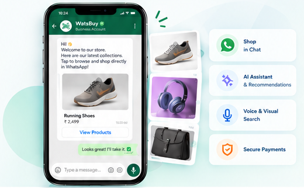

High Friction & Costs
Separate web domains, disconnected apps, clunky redirects, and rapidly escalating customer acquisition costs (CAC).
Everything you need to showcase products, assist buyers with conversational AI, process native in-chat payments, and re-engage customers automatically.

For higher visibility than traditional promotional email open rates.
Native WhatsApp Flows streamline cart conversion into just 2 quick taps.
Customers purchase in the app already installed on their devices.
Spending ~3 hours daily on social media and messaging channels.
Traditional webstores force shoppers through a fragmented customer journey with 7 disconnected touchpoints — and 7 distinct places to lose the sale.
Separate web domains, disconnected apps, clunky redirects, and rapidly escalating customer acquisition costs (CAC).
Low repeat engagement, lost emails, and ineffective retention across siloed messaging tools and webstore logins.
Merchant struggle with complex plugin stacks, slow website loading, and abandoned storefronts that fail to convert.
A direct comparison across capability, customer open rates, checkout steps, and engagement recovery from the official pitch deck.
| Capability | 🌐 Traditional Webstore | 💬 SMS Marketing | ◉ WatsBuy (WhatsApp Commerce) |
|---|---|---|---|
| ◉ Where the sale happens | Browser redirect (new external tabs) | Link to website (redirect) | ✓ Inside the chat (Native storefront) |
| ◉ Average open rate | 2% (promotional email) | 36% | ✓ 98% open rate |
| ▣ Checkout steps | 6–8 steps (forms, logins, redirects) | 5+ steps (external web load) | ✓ 2 taps (WhatsApp Flows) |
| ◉ AI product guidance | Plugin add-on (often clunky) | Not possible | ✓ Built-in, trained on your catalogue |
| ▥ Product broadcasting | Not supported natively | Text-only messages (no visuals) | ✓ Rich media catalogues & collections |
| ▣ Abandoned-cart recovery | Email only (frequently filtered into spam) | Generic blast (low conversion) | ✓ Personalized in-chat recovery nudge |
Positioning: WatsBuy is designed around the conversation, not the website.
| Core Architectural Feature | Traditional Web-First Platforms | ◉ WatsBuy (Conversation-First) |
|---|---|---|
| 🌐 Website commerce capability | ✓ Standard web storefront | ✓ Supported web catalogue integration |
| ◉ WhatsApp-first architecture | ✕ Not possible natively (requires external apps) | ✓ Native WhatsApp architecture |
| ◉ Conversational AI product agent | ✕ Limited / expensive third-party plugin add-on | ✓ Native catalogue-trained AI agent |
| ♩ Voice ordering & broadcast commerce | ✕ Non-existent or complex custom build | ✓ Native voice-to-order & rich broadcasts |
| ▣ Automated customer re-engagement | ✕ Fragmented email & SMS blasts | ✓ Automated 2-way in-chat re-engagement |
Meta Cloud API Compliance.
Built strictly according to Meta's Business Messaging guidelines to guarantee high deliverability and customer privacy.
Customer communications adhere to Meta's enterprise security protocols and cloud data standards.
Built with granular opt-in consent controls and privacy protection compliant with Indian and global laws.
Zero risk of account bans from unauthorized scrapers. Direct verified connection with Meta.
Full onboarding assistance to help eligible brand accounts achieve the official Meta verified badge.
Illustrative marketing metrics and journey losses are not independently verified WatsBuy performance data. Platform capabilities and Meta verification are subject to eligibility, implementation and provider policies.